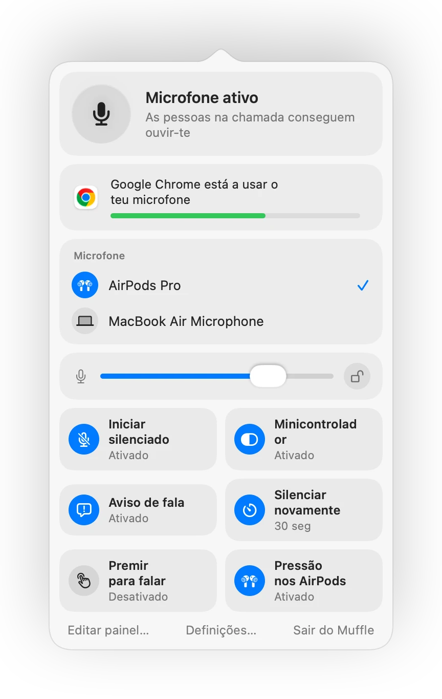

Como silenciar chamadas em qualquer separador do navegador no Mac
Cada vez mais chamadas decorrem no navegador: Google Meet, Teams na web, escritórios virtuais como SoWork e Gather, Whereby, Jitsi. Cada serviço tem o seu próprio botão e atalho de silêncio, e estes só funcionam quando o separador está aberto em primeiro plano.
Os navegadores também ignoram a pressão nos AirPods para silenciar no Mac. O Muffle aceita essa pressão, ou um atalho global, e silencia o microfone para todos os separadores em simultâneo.
Silenciar qualquer chamada na web
- 1
Instala o Muffle e permite o acesso ao microfone.
- 2
Abre a tua chamada em qualquer separador do navegador.
- 3
Prime a haste dos teus AirPods ou Controlo-Opção-M para silenciar, a partir de qualquer app ou separador.
- 4
Observa o ícone na barra de menus: vermelho significa que o microfone está desativado.

- Os escritórios virtuais mantêm o microfone aberto durante horas. Ativa o minicontrolador flutuante para veres sempre o teu estado.
- O aviso "Estás silenciado" alerta-te quando começas a falar enquanto estás silenciado.
Perguntas frequentes
Por que razão a pressão nos AirPods não funciona no Chrome?
O Chrome não é compatível com o gesto de silêncio dos AirPods do macOS em páginas web. O Muffle recebe essa pressão e silencia o microfone diretamente.
Funciona no SoWork e no Gather?
Sim. Qualquer site que utilize o microfone fica silenciado quando o Muffle desliga o microfone.